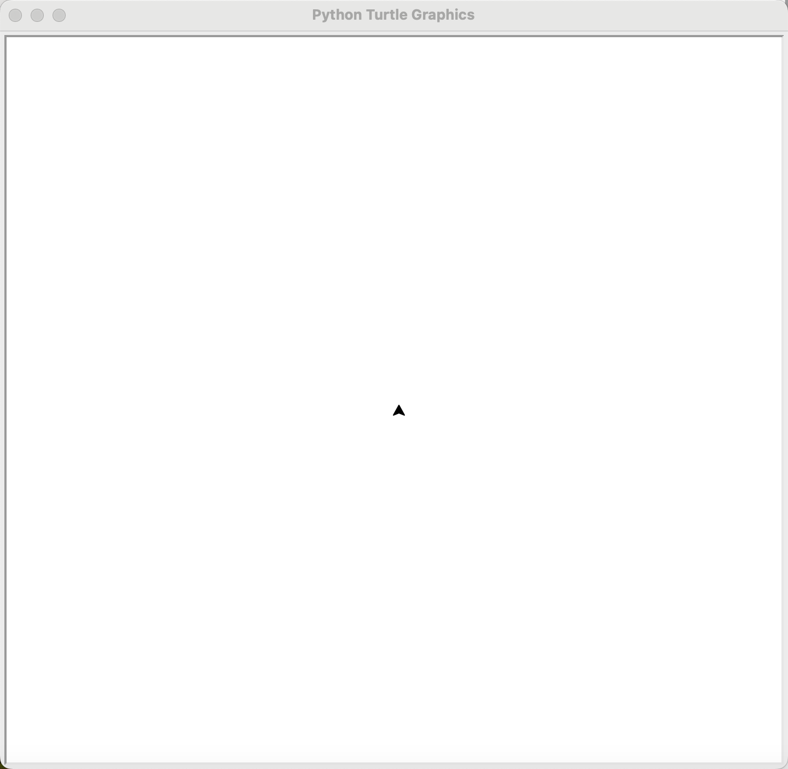

完整运算符
| 运算符 | 描述 |
|---|---|
[] [:] | 下标，切片 |
** | 指数 |
~ + - | 按位取反, 正负号 |
* / % // | 乘，除，模，整除 |
+ - | 加，减 |
>> << | 右移，左移 |
& | 按位与 |
^ \| | 按位异或，按位或 |
<= < > >= | 小于等于，小于，大于，大于等于 |
== != | 等于，不等于 |
is is not | 身份运算符 |
in not in | 成员运算符 |
not or and | 逻辑运算符 |
= += -= *= /= %= //= **= &= ` | = ^= >>= <<=` |
字面量
字面量是用于表达源码中一个固定值的表示法，整数、浮点数和字符串等等都是字符串。比如在下面声名变量语句中:
a = 1
a是声明的变量，那赋值符=后面的1就是字面量。总之，字面量就是没有用标识符封装起来的量，是“值”的原始状态。
按位取反
在学习按位取反之前，我们要先了解原码、反码和补码。
前面提到过，数值在计算机中的以二进制的方式存储的，但是真正在存储时用的都是二进制补码，且在存储之前先要经过原码->反码->补码的转换过程：
对于一个有符号数(即正、负)，它的最高位永远是符号位，0为正数，1为负数。假设我们的一台简易计算机只用一个字节(byte，即8位)来存储数值，那么对于5和-5来说:
原码:
5: 0000 0101
-5: 1000 0101
反码(正数反码即自身，负数则除符号位之外其它各位取反):
5: 0000 0101
-5: 1111 1010
补码(正数补码还是自身，负数则是在反码基础上加1):
5: 0000 0101
-5: 1111 1011
这样设计能够解决加减法不正确的问题
首先，计算十进制的表达式： 1-1=0，看一下原码的计算:
# 原码计算:
0000 0001 + 1000 0001 = 1000 0010
1000 0010转换成十进制之后为-2，这个结果显然是错误的，所以不能直接用原码进行运算。
那么反码会怎样：
# 原码计算:
0000 0001 + 1000 0001
# 反码计算:
0000 0001 + 1111 1110 = 1111 1111
# 转换回原码结果为
1000 0000
1000 0000转换成十进制之后为-0，结果是正确了，但是这个-0看起来又很奇怪，虽然人们可以理解+0和-0是一样的，然而带符号的0并没有什么意义。
使用补码就可以解决上述问题：
# 原码计算:
0000 0001 + 1000 0001
# 反码计算:
0000 0001 + 1111 1110
# 补码计算:
0000 0001 + 1111 1111 = 0000 0000
# 转换回原码结果为
0000 0000
这里有些同学会问，结果不应该是1 0000 0000吗？这里是因为我们假设计算机是用一个字节来存储数值的，一个字节是只有8位的，所以多出的1会被移掉。
现在我们来看一下按位取反是怎么实现的:
-5: 原码:1000 0101 反码:1111 1010: 补码:1111 1011
# 按位取反发生在补码上:
0000 0100
# 由于是正数的补码，和原码是一样的，那么结果就是:
0000 0100 即十进制的4
5: 原码、反码、补码: 0000 0101
# 按位取反后:
1111 1010
# 由于是补码，要先减1得到反码
1111 1001
# 再取反得到原码
1000 0110 即十进制-6
海龟的绝对零度
海龟的方向有两个模式：
| standard模式 | logo模式 |
|---|---|
0 - 东 | 0 - 北 |
90 - 北 | 90 - 东 |
180 - 西 | 180 - 南 |
270 - 南 | 270 - 西 |
海龟模块中的mode()函数可以设置海龟模式 (standard 或 logo) 并执行重置。
import turtle as t
t.seth(45)
t.mode('logo')
